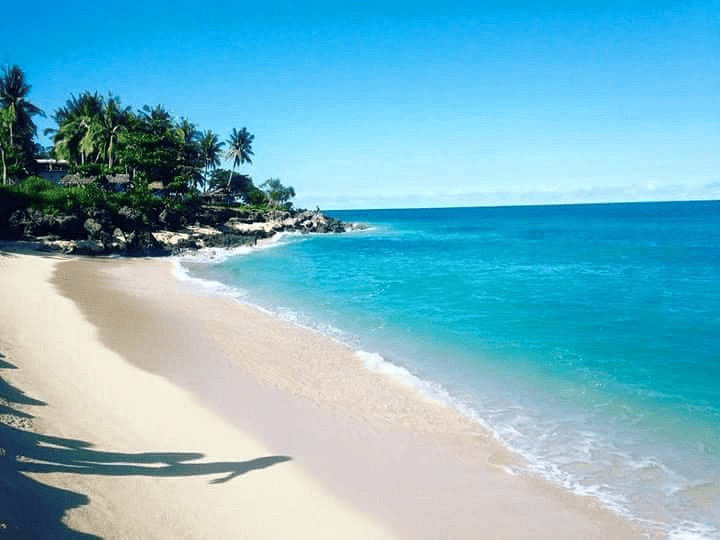
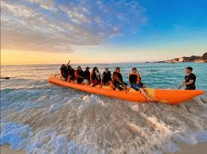
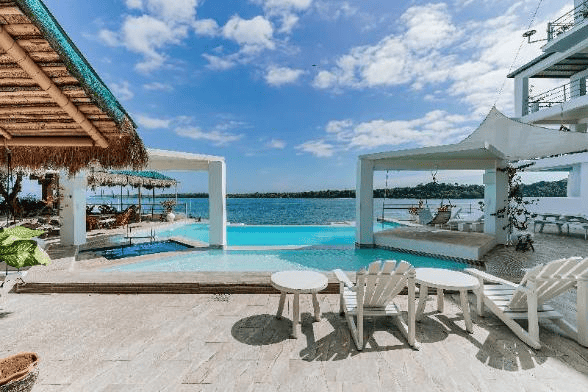
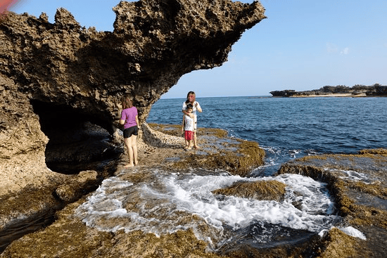

Bolinao White Beach is a scenic coastal destination in Bolinao, Pangasinan, Philippines, known for its fine white sand and clear blue waters. It attracts visitors seeking a quieter alternative to busier Luzon beaches, offering picturesque sunsets and proximity to other natural attractions.
Fun Facts
- The sand here is naturally light-colored due to crushed corals.
- Bolinao is also home to hidden waterfalls like Bolinao Falls 1, 2, and 3.
- Cape Bolinao Lighthouse nearby is one of the tallest in the Philippines.
Setting and Environment

Bolinao White Beach stretches along the South China Sea coastline, surrounded by limestone formations and coconut trees. Its waters are generally calm, making it suitable for swimming and family outings. The beach’s relatively undeveloped environment allows visitors to experience a more natural coastal landscape.
Activities and Attractions

Visitors enjoy water activities such as snorkeling, kayaking, and paddleboarding, with local operators offering gear rentals. Inland, tourists can explore Bolinao’s caves, waterfalls, and the historic lighthouse, creating a well-rounded eco-tourism experience that combines sea and land adventures.
Tourism and Access

Resorts and homestays of varying comfort levels line parts of the beach, catering to both budget and mid-range travelers. Public transportation and private vehicles from Metro Manila or nearby cities provide access. Peak visitation occurs during summer months (March–May), though weekdays and off-season visits provide a quieter atmosphere.
Cultural and Environmental Significance

The beach and its surrounding barangays contribute to the town’s tourism-driven economy. Community-led efforts emphasize sustainable tourism and conservation, promoting waste reduction and reef protection to maintain Bolinao’s pristine coastal environment for future generations.
Locals say that on especially quiet mornings, fishermen can predict the day’s catch just by reading the color of the sea. A slightly greener hue? Expect a good haul. It’s a skill passed down through generations—half science, half instinct.